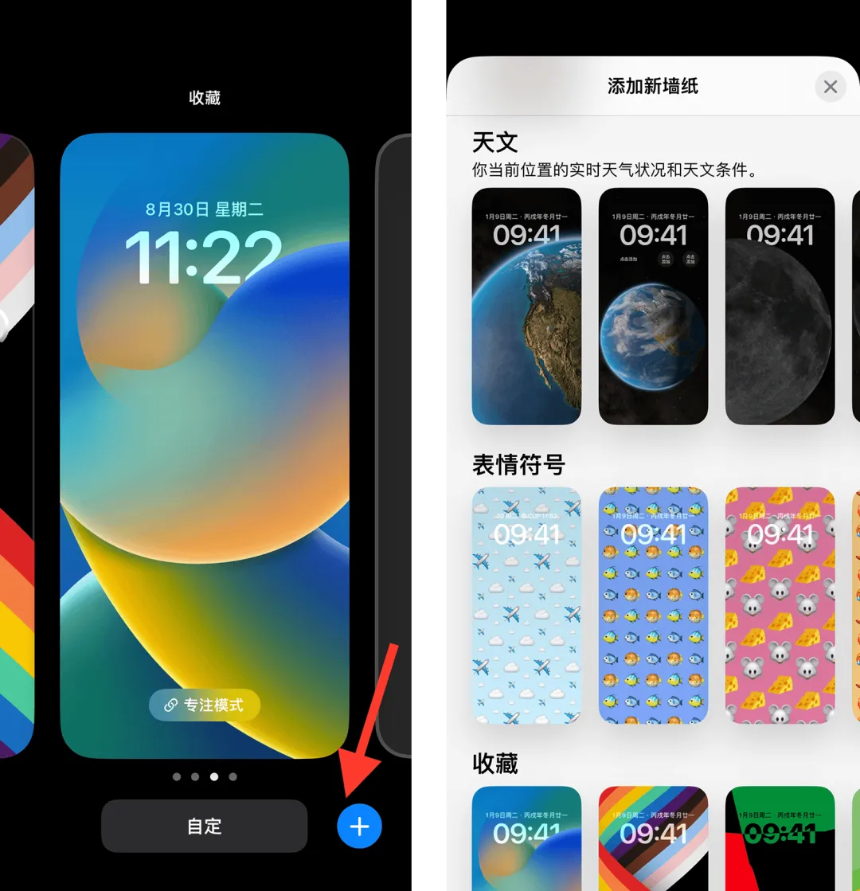
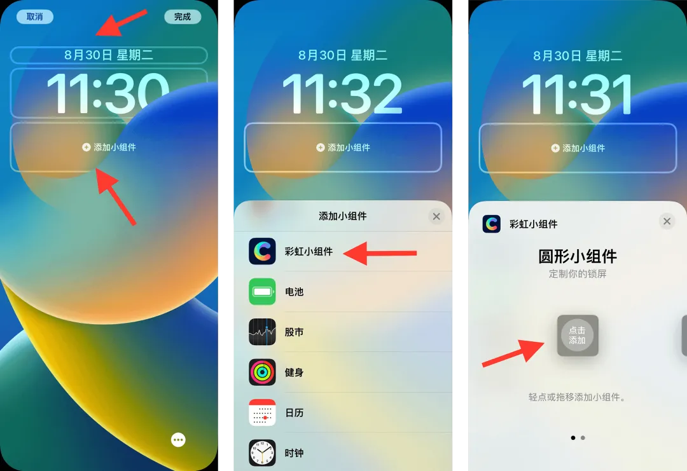
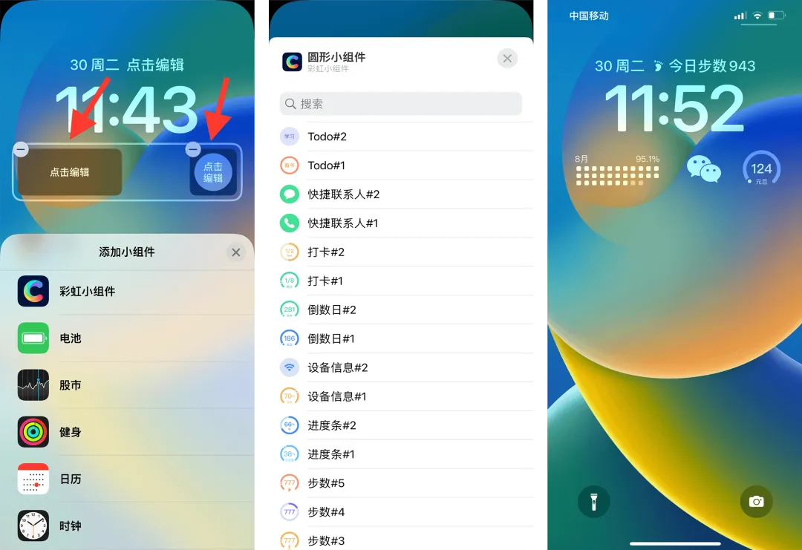

注意：锁屏小组件仅支持iOS 16.0及以上系统
1、打开彩虹小组件App，点击底导的“锁屏组件”，选择要添加的小组件点击进入详情页，点击详情页底部的保存按钮
2、在手机锁屏界面长按，如果没有添加新墙纸，点击右下角的加号按钮，添加新墙纸

3、在新墙纸界面，点击顶部的条形、或者底部的矩形后进入添加锁屏小组件界面，在添加界面点击彩虹小组件，然后点击添加不同的小组件类型

4、点击已添加的小组件，选择要显示的小组件，保存后可在锁屏上显示
